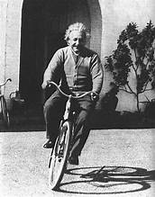

Hobbies
Sailing
I would often take a boat out onto a lake, pull out a notebook, relax, and think.
Reading
Reading books about nature, and playing violin. I was fascinated by the invisible magnetic force that makes compasses work.

Piano
My mother, Pauline Koch Einstein, was by all accounts an excellent pianist and it was her who tutored Einstein during his early musical explorations.

Travelling
I travelled to different places by cycle even though it is long to know the culture and habits etc at my free times